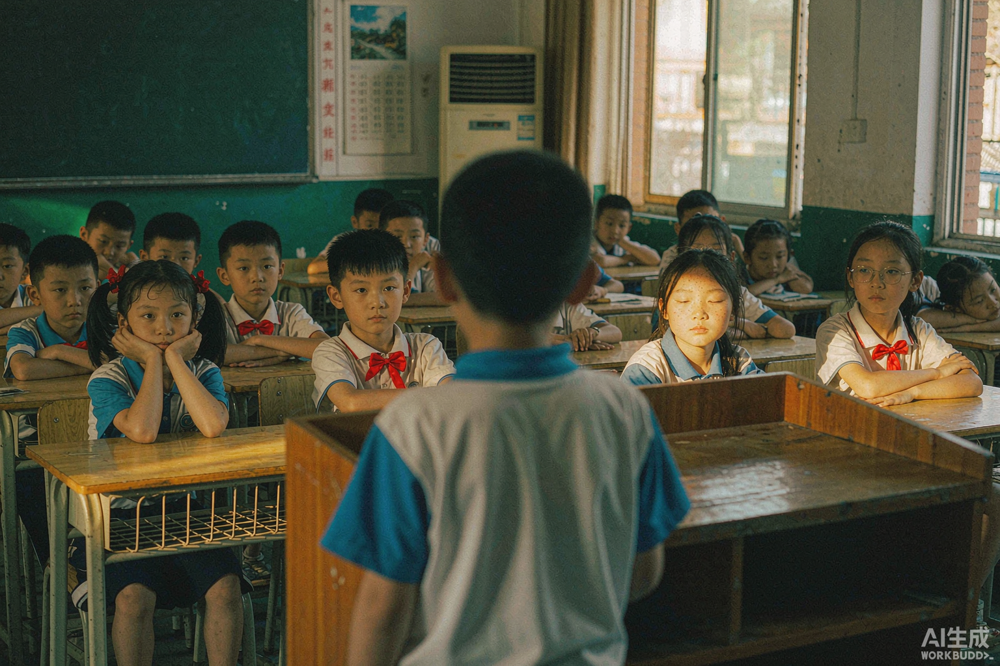
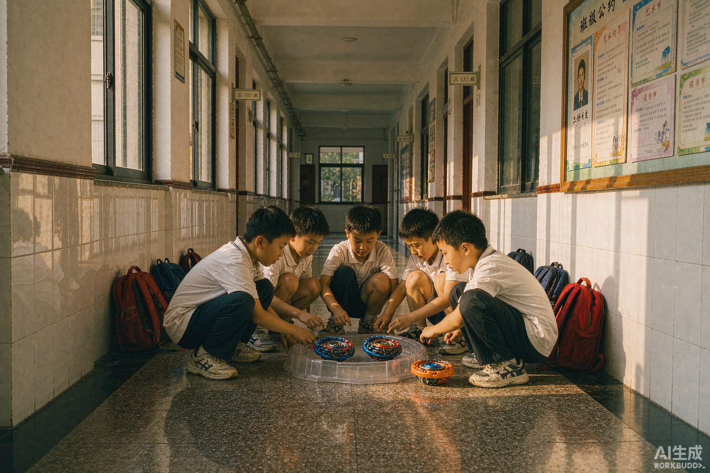
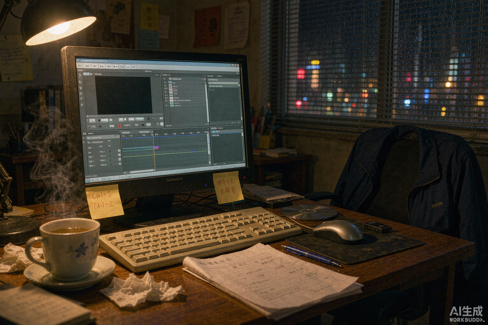

00 · 序客厅
我叫陈增楠，23岁，温州人在杭州。
做内容的——运营、导演、投放、文案，什么都干一点。
做内容的——运营、导演、投放、文案，什么都干一点。
电视里放的是我做过的片子 · 点遥控器换台 · 看完自动播下一集
SEARCHING CHANNEL…
按遥控器电源键开机
或点击电视屏幕
或点击电视屏幕
CH 01
关闭 · CLOSE
CH 01
VOL
CHERRRRRRY · CRT-1998
CHERRRRRRY
▲
◀
OK
▶
▼
CH-1
CH-2
CH-3
CH-4
VOL −
VOL +
节目单 · CHERRRRRRY TV
2026.09.14
校 园 时 光楠

01 · 壹校园
2021 年秋天。考上浙江工业大学，第一次扛摄像机。
新闻传播学，从此知道影像可以是一份工作。
新闻传播学，从此知道影像可以是一份工作。
从课堂作业到参赛获奖，从帮社团拍宣传片到自己运营账号——四年没闲着
自我介绍
SELF-INTRODUCTION · 2021.09 · 点击黑板擦除
陈增南
→
陈增楠
童 年 走 廊楠

02 · 贰走廊
更早之前。蹲在走廊上玩飓风战魂，谁的陀螺转得久谁就赢。
后来才明白，我迷恋的从来不是陀螺——是"动起来"这件事本身。
后来才明白，我迷恋的从来不是陀螺——是"动起来"这件事本身。
从陀螺到摄像机，从旋转的画面到流动的叙事，本质上是同一件事
童年
飓风战魂
蹲在走廊上，比谁的陀螺转得更久。第一次迷上「让一个东西动起来」。
调频
陀螺
影像
新传
内容
载体换了又换 —— 陀螺、镜头、文字、流量。
没变的是，我总想「让点什么，动起来」。
没变的是，我总想「让点什么，动起来」。
深 夜 剪 辑楠

03 · 叁深夜
2026 年。凌晨三点，剪辑台前。
一个人剪片子剪到天亮。
一个人剪片子剪到天亮。
从运营到投放，再到 AI 短剧导演 —— 走过的路
VIDEO 1
光粒·脚本
犀照·直播
织光·投放
兑吧·AI短剧
VIDEO 2
公众号·20篇
小度直播·360万
AI成片·7000万
AUDIO
BGM · 八音盒 + 环境音
代表案例 · 点开看细节
光粒科技 · 账号冷启动到增长
公众号 20+ 篇
接手时账号处于停滞期，内容方向模糊。重新梳理人设定位为"科技产品体验官"，建立"开箱+深度测评+场景化使用"的内容矩阵，围绕AR眼镜等核心产品做场景化内容。同时运营公众号20+篇，构建私域流量池。
犀照科技 · 小度闺蜜机直播起量
GMV 360万+
从0搭建直播全流程：选品策略、话术脚本、场控节奏、投流配合。针对"闺蜜机"的家庭场景属性，设计"睡前陪伴""亲子互动""健身跟练"三大场景化话术。
通过AB测试持续优化开播时段、话术与投流节奏，整体GMV做到360万+，环比增长96.88%。
兑吧科技 · AI短剧全流程制作
7000万+播放
建立"剧本→分镜→AI生成→后期→投放"的标准化工作流，显著压缩单部制作周期、提升产能。
主导10+部AI短剧，8部登上平台热榜，起量率80%，单部最高播放3000万+。
总结出"前三秒钩子+情绪反转+开放式结尾"的爆款结构，复用到后续项目中。
走过的路
2021.09 — 2025.06
浙江工业大学 · 新闻传播学
人文学院 · 全日制本科 · GPA 3.78/5.00
"双运"短视频大赛三等奖
2024.03 — 2026.09
光粒科技 · 新媒体运营
视频脚本/拍摄/剪辑 · 抖音/小红书/视频号 · 公众号20+篇
2025.03 — 2026.09
犀照科技 · 直播运营
小度添添闺蜜机直播全流程 · 累计 GMV 360 万+ · 环比 +96.88%
2026.02 — 2026.05
织光映画【麦芽集团】· 投放专员
TikTok Ads / Facebook 投放 · 短剧冷启动 / 测款 / 放量 · ROI 稳定达标
2026.05 — 现在
兑吧科技 · AI 短剧导演【幻境制作厂】
Midjourney / ChatGPT / 即梦 · 剧本→镜头→成片→出片 全流程 · 10+ 部 · 8 部热榜 · 总播放 7000万+ · 起量率 80% · 单部最高 3000万
编导
剪辑
策划
编剧
摄影
后期
AI 工作流
TikTok / Facebook 投放
我 的 电 脑楠
04 · 肆我的电脑
工作攒下的一些东西，放在电脑里。
点开看，或者——等 15 秒，会发生点事。
点开看，或者——等 15 秒，会发生点事。
双击文件夹打开 · 双击文件预览 · 桌面右键有彩蛋 · 闲置 15s 触发飞行 Windows 屏保
Windows 98